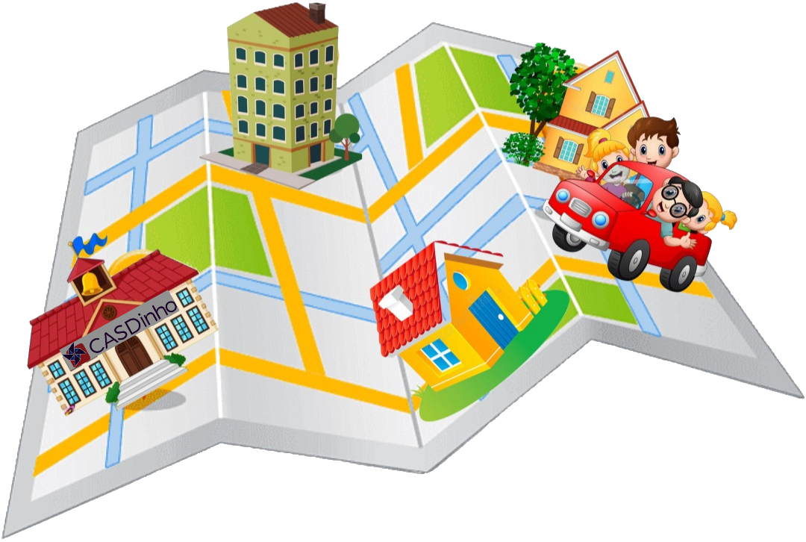

<ion-content [fullscreen]="true" color="dark">

    <ion-card color="dark">
        <ion-card-header>
            
            <ion-card-title>Saiba quem vai levar os casdinhers</ion-card-title>
        </ion-card-header>

        <ion-card-content>
            <h1>Confira quando você ou outro motorista vai legar os casdinhers</h1>
            <p> <br> <br>
                <ion-icon name="repeat"> </ion-icon> Veja o dia de revezamento; <br>
                <ion-icon name="bar-chart"> </ion-icon> Dados dos motoristas; <br>
                <ion-icon name="school"> </ion-icon> Dados dos casdinhers; <br>
                <ion-icon name="add"> </ion-icon> E muito mais...</p>
        </ion-card-content>
        
    </ion-card>
</ion-content>

<!--
  Próximo vídeo:
  https://www.youtube.com/watch?v=JoO0mMzlyVk&list=PLuXkauUmG1ZH7iJfW5GpAKAQTo_NL5PZ7&index=26
-->